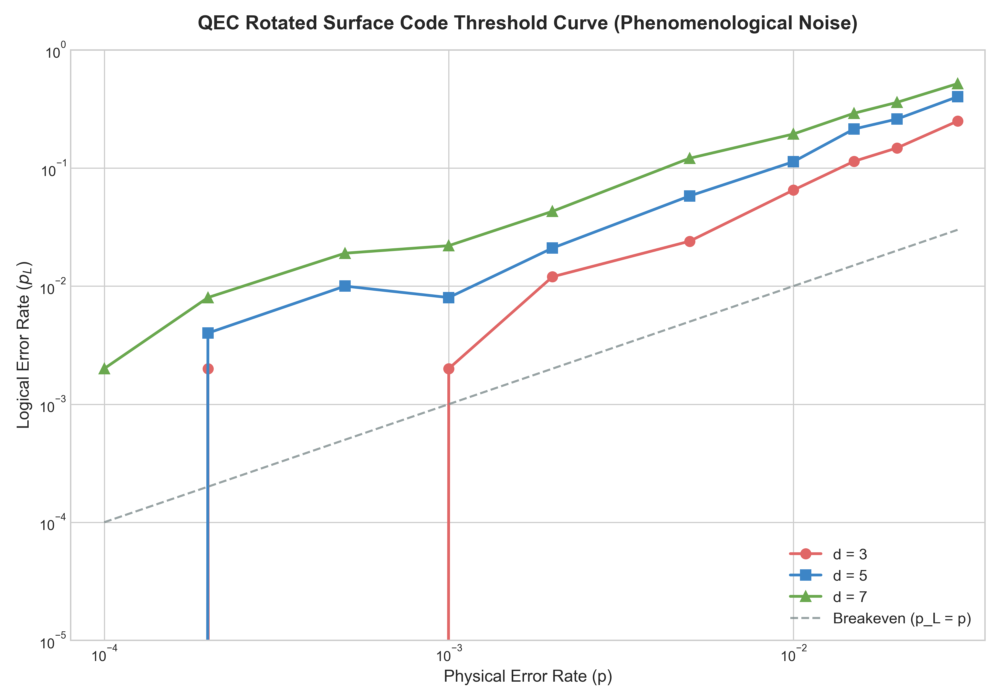

Rotated Surface Code QEC Simulator Dashboard
High-performance symplectic stabilizer simulation and Union-Find syndrome decoder analysis.
Data Noise Speed
75,700 runs/s
Phenom Noise Speed
12,300 runs/s
UF Decoder Complexity
O(N α(N))
Compilation Target
Apple Silicon
Threshold Analysis Plots
Both plots illustrate the relation between physical error rate (p) and logical error rate (p_L) for different code distances (d = 3, 5, 7).
Pure Data Noise (Perfect Measurements)

Crossing threshold is located at p ≈ 8.0%. Below this point, increasing code distance suppresses logical error rate.
Phenomenological Noise (Spacetime decoding)

Includes stabilizer measurement errors. Crossing threshold is located at p ≈ 1.5%.
Simulation Statistics (Logical Error Rates)
| Mode | Distance (d) | p = 1.0% | p = 0.5% | p = 0.2% |
|---|---|---|---|---|
| Data Noise Only (Perfect Measurements) |
d = 3 | 0.35% | 0.10% | 0.00% |
| d = 5 | 0.05% | 0.00% | 0.00% | |
| d = 7 | 0.00% | 0.05% | 0.00% | |
| Phenomenological Noise (Faulty Measurements) |
d = 3 | 5.00% | 2.00% | 1.10% |
| d = 5 | 11.90% | 6.40% | 1.70% | |
| d = 7 | 18.10% | 11.10% | 5.40% |
Technical Details
- Stabilizer Simulator: Tracks Clifford states using a packed binary symplectic tableau. All update operations utilize fast CPU-level word bitwise XORs.
- Union-Find Decoder: Standard disjoint-set implementation with rank-based unions and path compression. Peeling decoder runs in reverse BFS order from leaf nodes to verify parity.
- Subdomain Mapping: Pointed to
qcompiler.jaspersands.comusing custom GitHub Pages configurations.